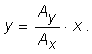

Oscilatorul mecanic
A.11. |
|
*Compunerea oscilaţiilor perpendiculare |
Cei care lucrează sau locuiesc la etajele superioare ale unei clădiri foarte înalte (cum sunt zgârie−norii) trebuie să suporte oscilaţii permanente,
cu amplitudini uneori de ordinul metrului!
Nici un corp nu este perfect rigid şi se deformează, chiar şi foarte puţin, sub acţiunea forţelor la care este supus.
La o clădire înaltă de sute de metri, micile deformaţii conduc la deplasări apreciabile la vârful clădirii.
 Activitatea experimentală 1A11−1
Activitatea experimentală 1A11−1
Investighează oscilaţiile vârfului unei tije subţiri şi lungi. Lucrează în echipă.
Pasul 1 Fixaţi într−un suport solid o tijă cilindrică de oţel, având diametrul de aproximativ 8 mm şi lungimea de
aproximativ 1 m.
La capătul superior al tijei, ataşaţi strâns un indicator laser, folosind bandă adezivă, astfel încât banda să bloceze butonul pe poziţia "pornit" şi
laserul să trimită lumina vertical în sus.
Atenţie! Evitaţi ca lumina laserului să pătrundă direct în ochii cuiva! Aşezaţi tija
astfel încât laserul să fie deasupra nivelului ochilor voştri. Priviţi doar pata de lumină de pe tavan.
Pasul 2 Trageţi lateral capătul superior al tijei pe o distanţă de câţiva centimetri şi eliberaţi−o. Observaţi oscilaţia tijei,
urmărind pata de lumină trimisă de laser pe tavan.
Pasul 3 În timp ce tija oscilează, loviţi scurt capătul superior al tijei pe o direcţie perpendiculară pe cea a oscilaţiilor iniţiale.
Observaţi oscilaţia tijei. Încercaţi mai multe combinaţii de oscilaţii.
Capătul liber al tijei descrie traiectorii foarte diverse (figura 1A11−1).
a. b. c.
Fig. 1A11−1. Traiectorii ale petei de lumină care se mişcă odată cu vârful tijei.
 Provocarea 1A11−1
Provocarea 1A11−1
De unde rezultă oare o diversitate atât de mare de traiectorii descrise de vârful tijei?
Când încerci să înţelegi un fenomen complex, o metodă eficientă este să faci, cel puţin la început, simplificări rezonabile, care să îţi permită să obţii
primele rezultate utile.
Pentru început, să considerăm că vârful tijei se mişcă practic într−un plan orizontal.
Nu este chiar aşa, dapr pentru amplitudini de oscilaţie de
câţiva centimetri, curbura suprafeţei pe care o descrie vârful tijei lungă de un metru este atât de "lină", încât o putem aproxima cu o suprafaţă plană
(este mai uşor să urmăreşti o mişcare care se efectuează într−un plan).
Când tragi lateral vârful tijei, aceasta se încovoaie: partea exterioară a tijei încovoiate este alungită puţin, iar partea interioară este comprimată
(figura 1A11−2).
Fig. 1A11−2. Deformări într−o tijă încovoiată.
Astfel, în tijă apar tensiuni elastice care vor încerca să aducă tija în poziţie verticală.
Când eliberezi tija, tensiunile elastice o vor pune în mişcare înspre poziţia verticală, de echilibru.
Câştigând viteză în drumul spre poziţia de echilibru, tija nu se poate opri brusc în poziţia de echilibru (chiar dacă acolo tensiunile elastice sunt nule).
Inerţia tijei face ca aceasta să treacă dincolo de poziţia de echilibru. Tensiunile elastice care apar din nou o vor încetini şi apoi o vor accelera
înapoi, către poziţia de echilibru − tija oscilează!
Să alegem o axă Ox în lungul direcţei orizontale de−a lungul căreia oscilează vârful tijei şi să presupunem că această oscilaţie este
armonică (singurul tip de oscilaţie pe care îl poţi aborda, deocamdată).
Alegând momentul iniţial chiar când vârful tijei este eliberată de la elongaţie maximă pozitivă, ecuaţia mişcării vârfului tijei este:
Dacă în timpul oscilaţiei în lungul axei Ox, loveşti scurt vârful tijei pe o direcţie perpendiculară Oy, vei determina şi o oscilaţie în
lungul axei Oy, descrisă de ecuaţia:
unde δ este diferenţa de fază dintre cele două oscilaţii (dependentă de momentul la care porneşti oscilaţia de−a lungul axei Oy).
Vârful tijei se va mişca astfel încât, la oricare moment de timp va trece prin poziţia de coordonate (x, y), date de expresiile (1) şi (2).
Poziţiile succesive ale vârfului tijei depind astfel de cinci parametri independenţi: amplitudinile şi pulsaţiile pe fiecare dintre cele două direcţii,
precum şi defazajul dintre oscilaţiile pe cele două direcţii. Rezultă astfel o diversitate uluitoare de traiectorii posibile!
Putem face simplificări suplimentare pentru a începe să înţelegem cum oscilează vârful tijei.
Presupunând că tija se comportă identic, indiferent de direcţia în care este încovoiată, pulsaţiile de oscilaţie pe cele două direcţii sunt egale:
Pentru o tijă cu secţiunea aplatizată, sau pentru o clădire reală, simplificarea (3) nu este valabilă. Arareori clădirile sunt perfect simetrice faţă de
o axă verticală, rezultând astfel comportări diferite la încovoierea după direcţii diferite.
În condiţiile simplificiării (3), vom aborda în continuare cazul (mai simplu) al compunerii oscilaţiilor perpendiculare având aceeaşi pulsaţie. În
aceste condiţii, ecuaţiile de mişcare după cele două direcţii sunt:
respectiv
Provocarea 1A11−2
Care te aştepţi să fie traiectoria vârfului tijei, în aceste condiţii?
Poţi obţine ecuaţia traiectoriei eliminând parametrul timp între ecuaţiile (1') şi (2') - traiectoria este atemporală!
Astfel, din ecuaţia (1') obţii:
iar din (2') obţii:
Ţinând cont de relaţia (3) şi de faptul că
relaţia (4) define:
Relaţia (5) descire complet traiectoria vârfului tijei: îţi permite să calculezi coordonatele y pentru oricare coordonată x.
Totuşi, complexitatea relaţiei (5) nu îţi permite să întrevezi uşor forma traiectoriei pentru diferite valori ale parametrilor care intervin. Suntem
nevoiţi să simplificăm în continuare!
Dacă reuşeşti să loveşti scurt vârful tijei în sensul pozitiv al axei Oy chiar când vârful tijei trece prin poziţia de echilibru în sensul pozitiv
al axei Ox, vitezele de−a lungul celor două axe vor fi simultan maxime, astfel că defazajul dintre cele două oscilaţii este nul:
δ = . În acest caz,

Aceasta este ecuaţia unei drepte care trece prin poziţia de echilibru şi are panta (figura 1A11−3).
Fig. 1A11−3. Traiectoria pentru defazaj nul.
Provocarea 1A11−3
Cum te aştepţi să fie traiectoria în cazul defazajului nul şi al amplitudinilor egale pe cele două direcţii perpendiculare?
Dacă reuşeşti să loveşti scurt vârful tijei în sensul pozitiv al axei Oy chiar când vârful tijei se află la elongaţia maximă pozitivă, defazajul dintre
cele două oscilaţii este  , astfel că ecuaţia traiectoriei devine:
, astfel că ecuaţia traiectoriei devine:
Aceasta poate fi pusă, prin ridicarea ambilor membri la pătrat şi regruparea termenilor, în forma mai compactă:
Aceasta este ecuaţia unei elipse, având axele orientate în lungul axelor Ox, respectiv Oy (figura 1A11−4).
Fig. 1A11−4. Traiectoria pentru defazaj .
Provocarea 1A11−4
Cum te aştepţi să fie traiectoria în cazul defazajului şi al amplitudinilor egale pe cele două direcţii perpendiculare?
Pentru un defazaj intermediar (între 0 şi ), elipsa este mai mult sau mai puţin "turtită" şi are axele înclinate, în funcţie
de defazajul δ (figura 1A11−5).
Fig. 1A11−5. Traiectoria pentru defazaj intermediar, între 0 şi .
Chiar dreapta din figura 1A11−3 este un caz extrem de elipsă, atât de "turtită" încât se confundă cu un segment de dreaptă. Aşadar,
 Traiectoria rezultată prin compunerea a două oscilaţii armonice perpendiculare, având aceeaşi pulsaţie, este o elipsă a cărei formă şi orientare
depind de raportul amplitudinilor oscilaţiilor care se compun şi de defazajul dintre acestea.
Traiectoria rezultată prin compunerea a două oscilaţii armonice perpendiculare, având aceeaşi pulsaţie, este o elipsă a cărei formă şi orientare
depind de raportul amplitudinilor oscilaţiilor care se compun şi de defazajul dintre acestea.
Această analiză simplificată a compunerii oscilaţiilor perpendiculare este încă o treaptă pe care ai urcat: vei putea aborda acum cu mai mult curaj cazuri
mai complexe, care te−ar putea interesa.
Poţi cere unui calculator să−ţi prezinte diversitatea uluitoare de traiectorii posibile pentru diferite valor ale parametrilor oscilaţiilor care se
compun!